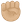

Force et courage à toi et à ta famille

Je n’ai encore jamais eu à vivre cette épreuve, je n’ai donc malheureusement que peu de mots à transmettre. J’espère que malgré le trouble et le désarroi, tu pourras traverser cette période de la manière la plus sereine possible et le moment venu regarder de nouveau vers l’avant.
Mon David,
Ce n’est pas simple de trouver les mots mais je voulais juste me joindre à l’initiative collective pour te communiquer tout mon soutien dans cette épreuve. J’admire ta force depuis que je te connais, en particulier en ces derniers mois difficiles. Je te souhaite un retour à la légèreté avec les énergies du printemps, entouré des merveilleuses personnes qui t’accompagnent déjà. J’ai hâte de te retrouver en vrai pour un gros câlin post-période de Covid de merde et en attendant pour boire des coups et profiter de ta lumineuse présence.
Mon yakuzin, faut être fort, comme dans le jeu de la virilité
Salut David,
Un petit message de soutien en cette période difficile. Si tu as besoin d’un raton tentaculaire, tu sais où me trouver
Bisous